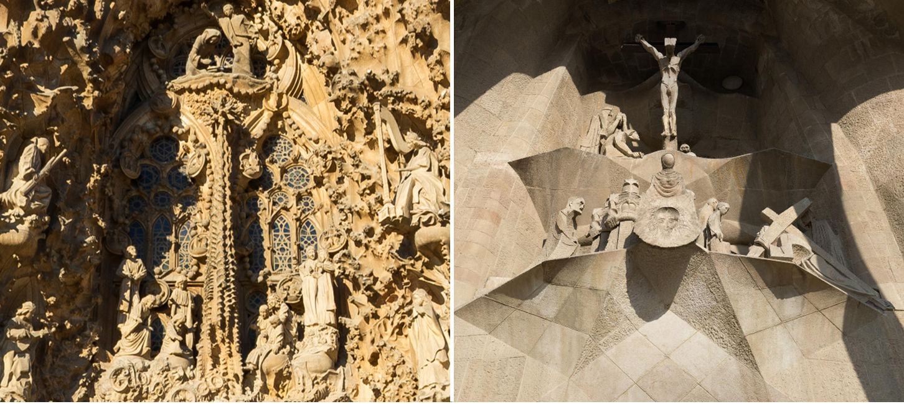
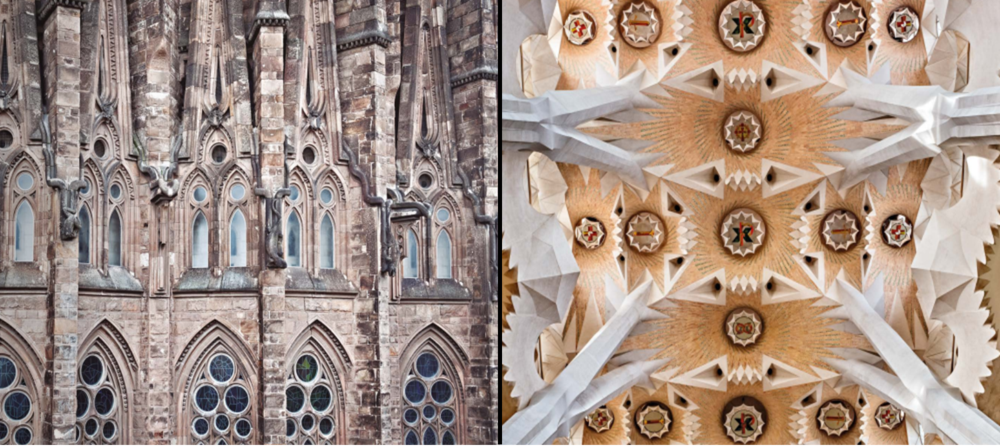
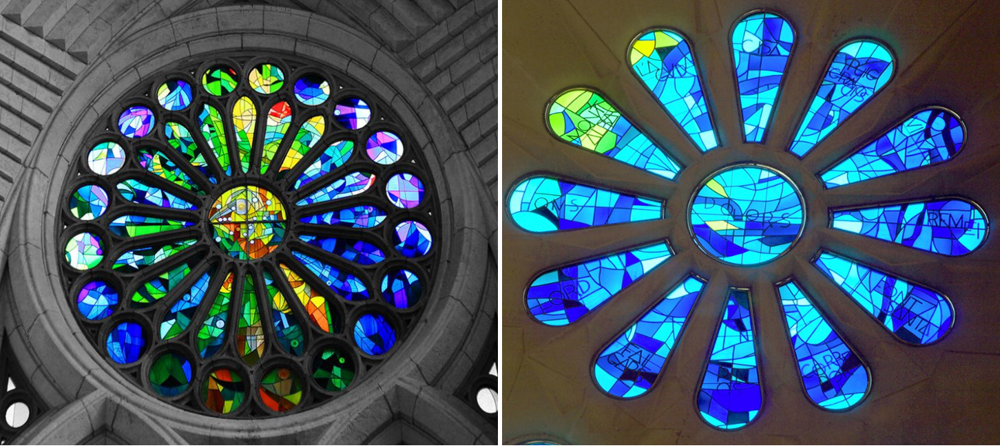
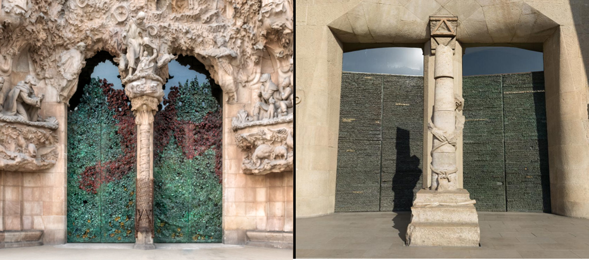

Entramos en materia
Responde y comenta estas preguntas con tus compañero/as:
- ¿Te interesa la arquitectura?
- ¿Te gusta la arquitectura de Barcelona?
- ¿Qué monumentos o edificios te gustan más de la ciudad?
- ¿Has visitado el interior de la Sagrada Familia? ¿Cumplió tus expectativas?
- ¿Te recuerda a algún otro edificio?
- ¿Te parece el monumento más importante de España?
- ¿Cuál piensas que es el monumento más importante de tu país? ¿Por qué?

Actividad 1: Vocabulario arquitectónico
Elige la palabra correcta para la imagen:
Actividad 2: Palabras secretas
Completa las oracines con las palabras de la actividad anterior.
- En mi universidad hay una réplica de la de la Venus de Milo.
- El arquitecto está trabajando en la del edificio nuevo.
- En el pasado, los castillos tenían para defenderse.
- La mezquita de Córdoba es reconocida por sus .
- El edificio donde vivo tiene la roja con muchas ventanas.
- Estas llaves no son de tu .
- El de la iglesia de mi barrio es muy bonito.
- La de Trajano es un monumento muy importante en Roma.
Actividad 3: El interior del templo
Completa el texto informativo sobre una de las partes más importantes de una iglesia: el ábside. Usa los verbos: haber(x3), estar(x5) y tener(x3)
En las iglesias una parte muy importante que se llama ábside, donde el altar. En la Sagrada Familia, el altar una conexión especial con la torre de Jesús, que justo encima del ábside. Esta estructura en la parte trasera del templo. una forma semicircular y por encima de la cripta, lugar donde todavía detalles antiguos. Este ábside tres partes: el presbiterio, el deambulatorio (un pasillo que alrededor) y las siete capillas absidiales. También dos escaleras grandes a los lados que permiten bajar a la cripta y subir a las torres, que aún están en construcción.


Actividad 4: Enfrentamiento de fachadas
Responde a estas preguntas para hacer una comparación de las fachadas:
- Esculturas (formas, escenas, figuras)
- Columnas (aspecto, elementos decorativos)
- Sentimientos expresados
- Relieve (texturas)
Actividad 5: A o B
Elige la imagen que más te gusta de las siguientes parejas y explica por qué.





Reflexión
Comenta estas últimas cuestiones con tus compañero/as:

- Después de estas actividades, ¿te interesa más la Sagrada Familia?
- ¿Te interesa aprender léxico relacionado con la arquitectura?
- ¿En qué año piensas que se terminará la Sagrada Familia? ¿Irás a verla completada?
Si hay más tiempo, podéis investigar los Cuadernos informativos de la página web: